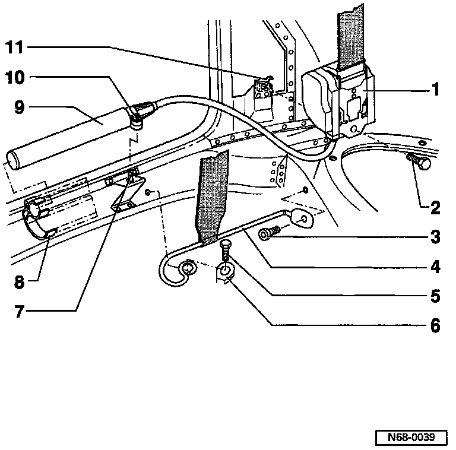

2 Door
WARNING: ALWAYS follow the prescribed work sequence for removing or installing the belt reel.
1 - Belt reel
2 - Hex bolt - Torque to: 40 Nm (30 ft lb)
3 - Socket-head cap screw - Torque to: 23 Nm (17 ft lb)
4 - Anchor rail
5 - Hex bolt - Torque to: 40 Nm (30 ft lb)
6 - Cap
7 - Threaded bolt
8 - Cable channel/Mounting for tensioning unit
9 - Tensioning unit
10 - Locknut - Torque to: 20 Nm (15 ft lb)
11 - Retaining lugs
- Determine belt reel mounting position
Removing:
- Remove side panel trim.
- Loosen locking nut -10-, this detaches tensioning unit -9- and makes it inactive.
- Remove front anchor -4-.
- Remove cover cap from relay fitting and remove relay fitting.
- Remove belt guide.
- Remove belt reel -1-.
- Pull tensioning unit -9- out of bracket -8-.
Installation:
- Installation is carried out in the reverse order of removal